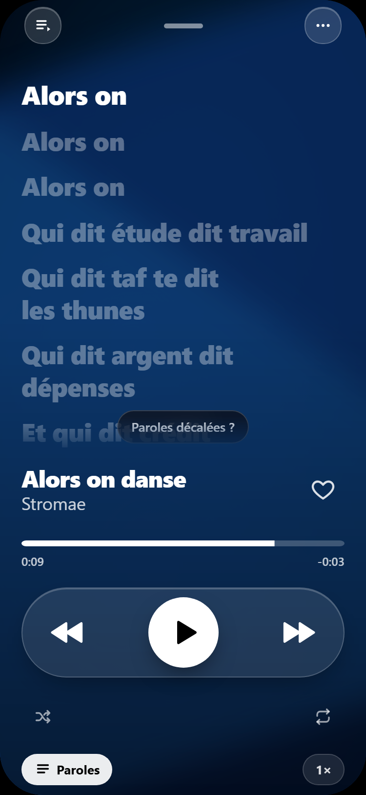
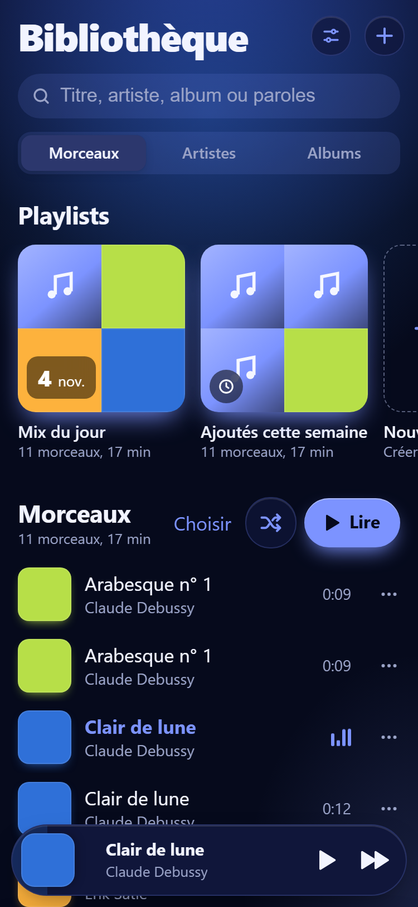
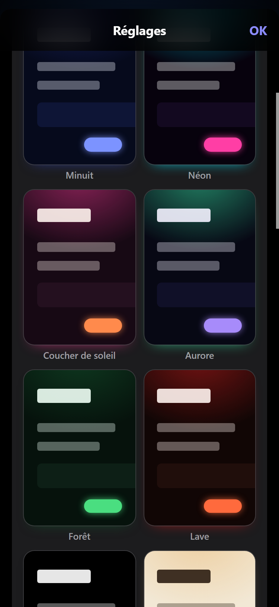
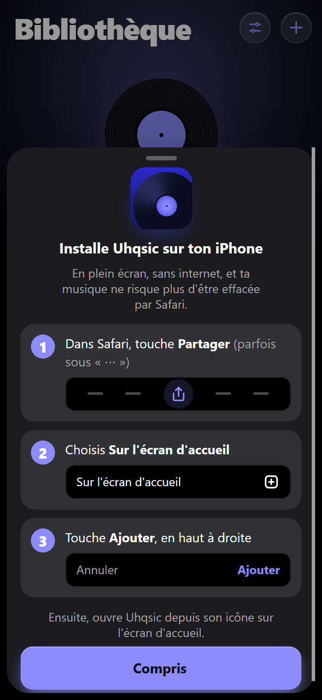

Ta musique, à ta façon.
Tes fichiers, tes paroles synchronisées. Sans compte, sans pub.


Ta bibliothèque, vivante.
Mix du jour
Un nouveau mélange chaque matin, fait avec ce que tu aimes.
Radio d’artiste
Ses sons mêlés à ceux des artistes proches.
Humeurs et étoiles
Range par envie, note tes favoris, retrouve tout.
Au doigt
Glisse une ligne : favori d’un côté, lire ensuite de l’autre.
Onze ambiances.
Minuit, Néon, Aurore, Vinyle, Sakura… Chacune change les couleurs, le fond, parfois la police.

Ton PC et ton iPhone, liés.
Un code
Six chiffres affichés sur un appareil, tapés sur l’autre.
Un oui
Rien ne se lie sans ton accord.
Tout suit
Musique, playlists, paroles et favoris passent de l’un à l’autre, en direct.

L’installer sur iPhone.
Ouvre Uhqsic dans Safari
Touche Partager
Parfois caché sous le bouton des trois points.
Sur l’écran d’accueil, puis Ajouter